Київ, вул. Дорогожицька, 3, UNIT.City, зала UNIT.Verse в кампусі B12
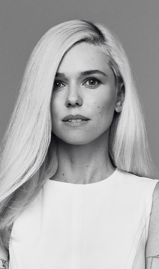
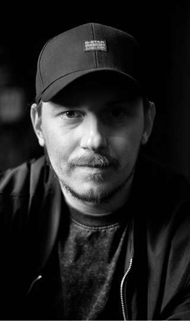
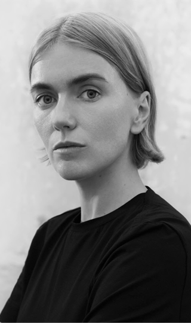
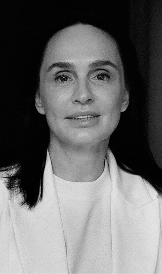
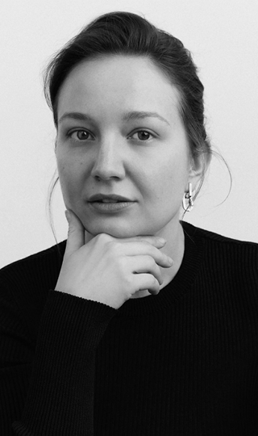
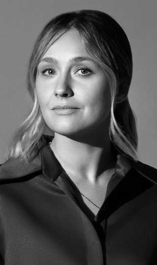
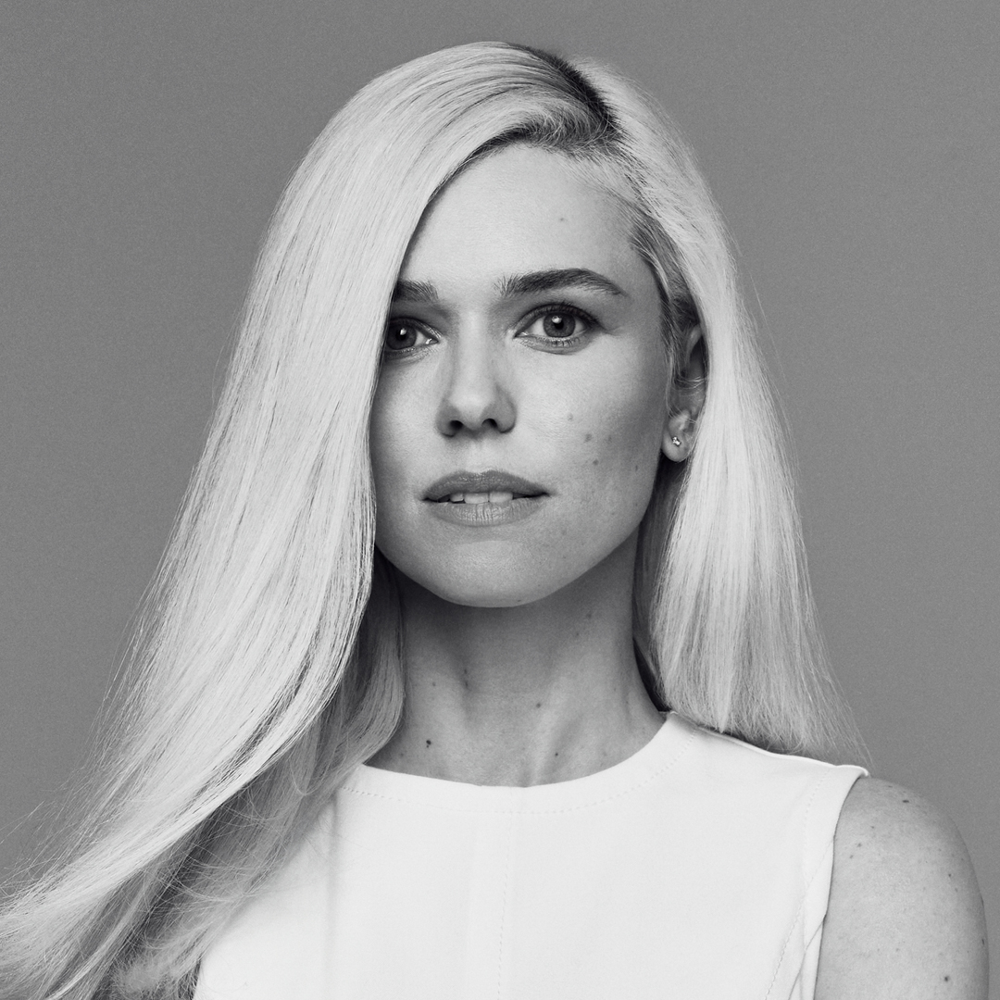
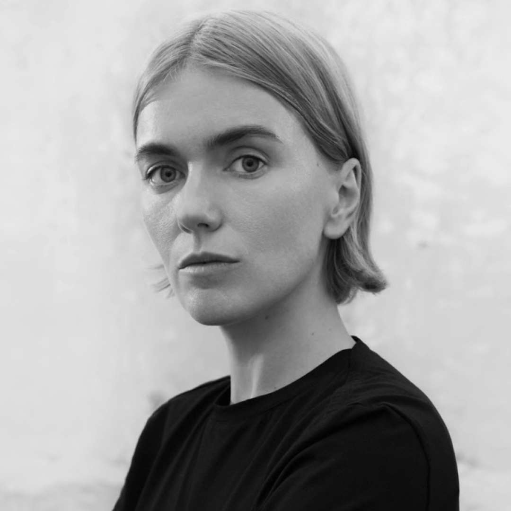
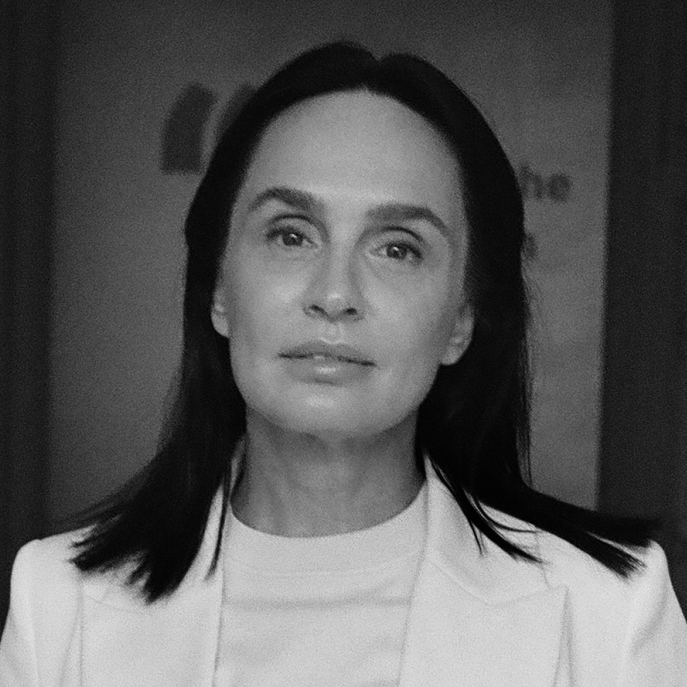
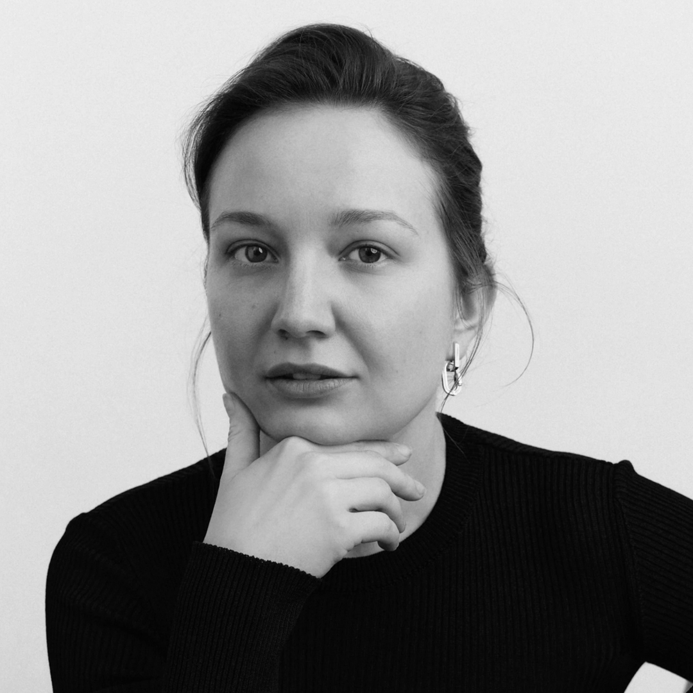
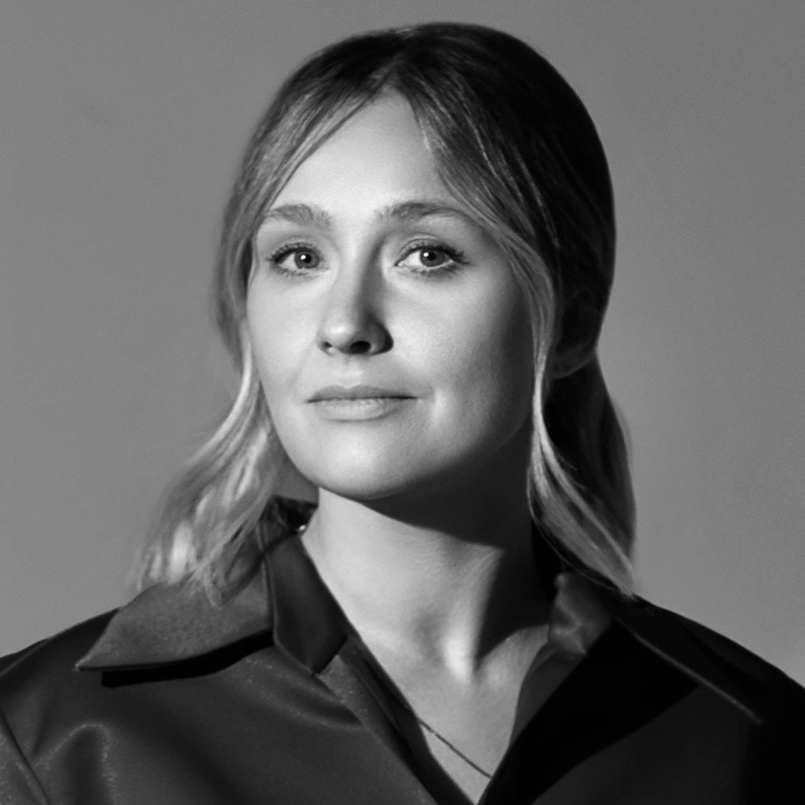
17/07/2024 14:00
ЛОКАЦІЯ: UNIT.City, Київ, вул. Дорогожицька, 3, кампус B12 ЯК ДІСТАТИСЯ
VOGUE UKRAINE LEADERS: CLASS OF 2024
Про подію
Vogue Ukraine започатковує щорічну ініціативу Vogue Leaders, щоб вшанувати професіоналів у галузях мистецтва, дипломатії, освіти та громадського активізму, які визначають сьогодення країни та формують її майбутнє. Приєднуйтесь до нас на саміті Vogue Ukraine Leaders Class of 2024 в інноваційному парку Unit City.
У програмі заходу – виступи, панельні дискусії та змістовні розмови з визначними лідерами та лідерками креативних індустрій про нагальні виклики часу, з якими стикаються суспільство, бізнес та культура, а також про пошуки ефективних відповідей на них. Під час події буде презентовано перше спеціалізоване друковане видання Vogue Leaders. Редакція продовжує допомагати жінкам-військовим: прибуток від продажу лімітованих VIP-квитків буде спрямовано до фонду Veteranka.
НАШІ СПІКЕРИ
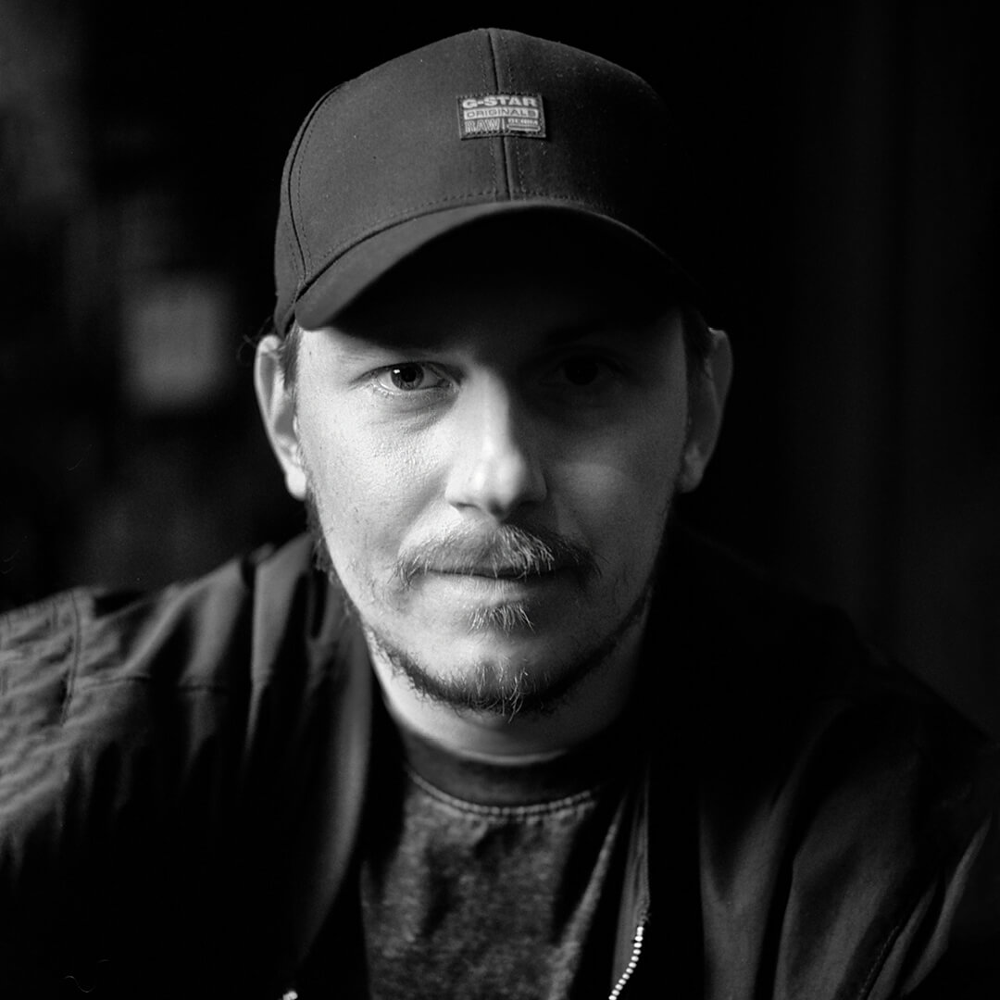
Іван Уривський
Театральний режисер
Провідного режисера Національного драматичного театру ім. Івана Франка, лауреата Шевченківської премії 2024 року Івана Уривського по праву називають наймоднішим театральним постановником столиці. Його вистави «Конотопська відьма», «Марія Стюарт», опера «На русалчин Великдень» незмінно збирають аншлаги та викликали бум цікавості до нового українського театру. Основа творчого почерку Уривського – новаторський погляд на українську та світову класику, вміння бачити в ній актуальні контексти.
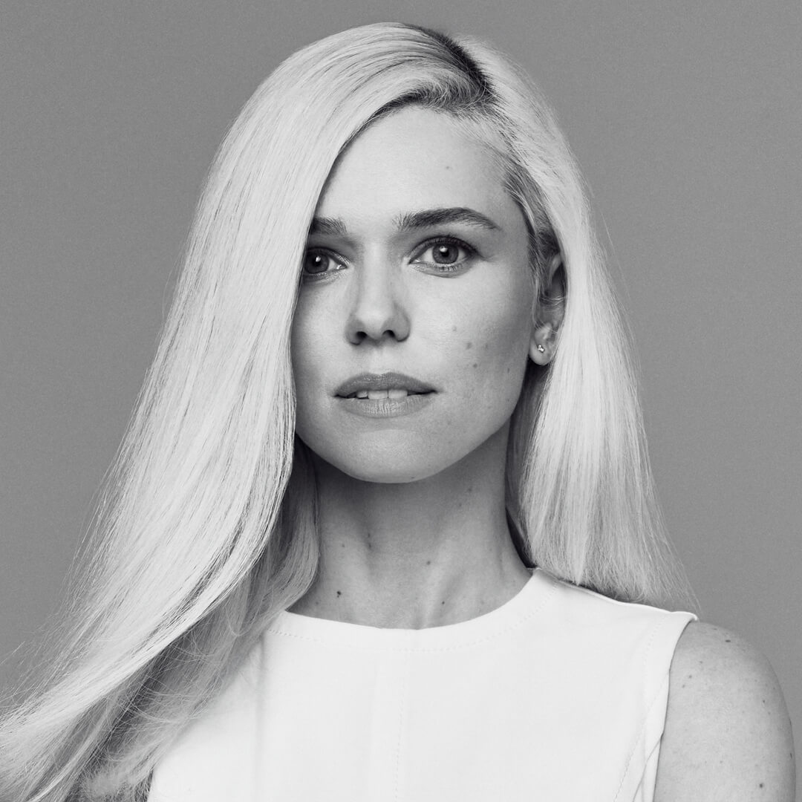
Ярослава Гресь
Громадська діячка, піарниця, маркетологиня, журналістка та блогерка
Співзасновниця і керівна партнерка комунікаційної агенції Gres Todorchuk, яка опікується культурними, освітніми та соціальними ініціативами. Серед гучних проєктів Ярослави – одна з найвідвідуваніших виставок в історії країни «Музей новин»; книга #EUROMAIDAN – History in the Making, що задокументувала події Революції гідності; «Азовсталь. Символ незламності», створений для фандрейзингової платформи UNITED24; «Потяг до перемоги», розписаний митцями на вшанування героїчного спротиву українців на окупованих територіях.
Лілія Літковська
Дизайнерка
Колекції Лілії Літковської з 2017 року демонструються в офіційному розкладі Паризького тижня моди і представлені в київському ЦУМі, лондонському Selfridges, паризьких La Samaritaine, Leclaireur і токійському Dover Street Market. Дизайнерка переосмислює українські традиційні мотиви і просуває сталу моду через екологічну демі-кутюр-лінію «Артизаналь». 2020 року Літковська заснувала навчальну платформу Schooll of Art x Craft, де дає старт новому поколінню професіоналів модної індустрії - закрійникам, дизайнерам і керівникам модних брендів.
Гелена Саврук
Провідна експертка з питань інституційної розбудови, оборонного сектору, бізнесу та трансформаційних проєктів
Громадська діячка, кандидатка економічних наук, керівна партнерка Могилянської стратегічної агенції (MSA), заступниця декана Києво-Могилянської Бізнес-Школи, керівниця програм «Школа стратегічного архітектора» та «Стратегічне лідерство в секторі безпеки і оборони». Знається на впровадженні масштабованих моделей бізнесу, має понад 15 років досвіду управління компаніями та холдингами. Кавалер ордену Княгині Ольги III ступеня за внесок у захист державного суверенітету.
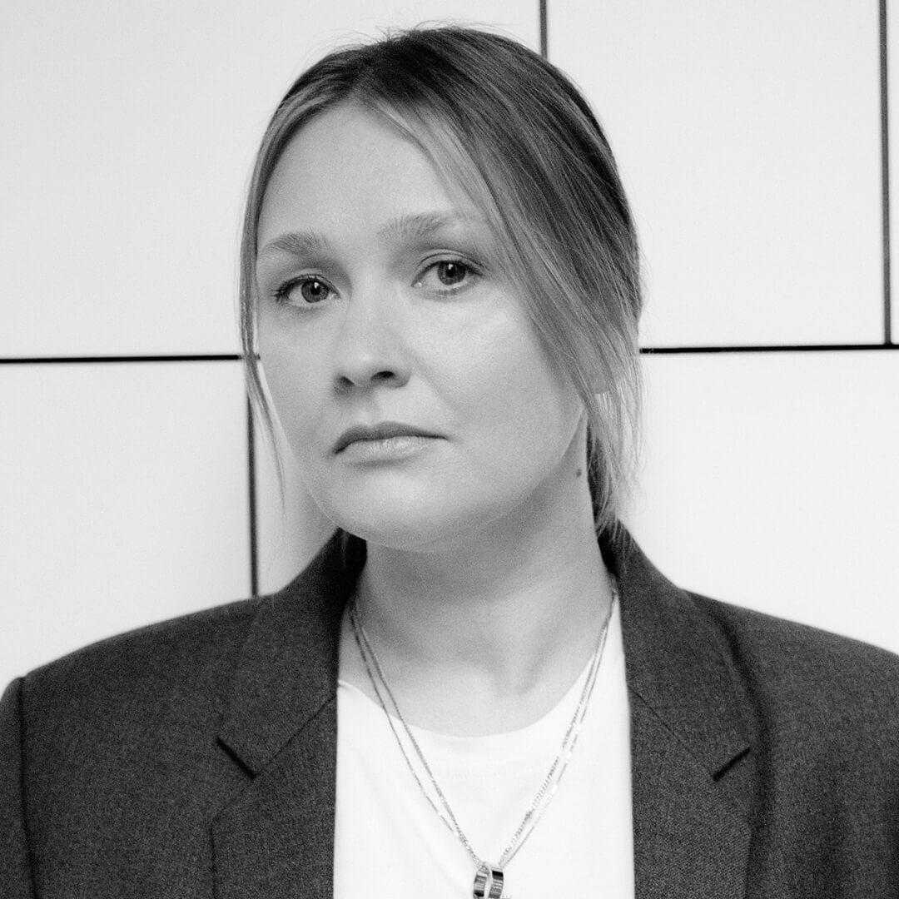
Валерія Іонан
Заступниця міністра цифрової трансформації з питань євроінтеграції
Валерія доєдналася до команди Міністерства з моменту його створення у 2019 році та відповідає за національну програму розвитку цифрової грамотності “Дія.Освіта”, сприяння цифровій трансформації МСП та проєкт “Дія.Бізнес”, розвиток регіональної цифровізації, координацію розвитку інновацій і стратегію WinWin; очолює команду євроінтеграції та просуває бренд цифрової України у світі. У березні 2023 року Іонан увійшла до книги Lasting Legacy від Mastercard як одна з 25 лідерок світу, що мають значний вплив на суспільство та уряди.
Катерина Приймак
Співзасновниця фонду "Ветеранка", парамедикиня, громадська активістка
Культурологиня за освітою, у 2014 доєдналася до добровольчого медичного батальйону “Госпітальєри”. Протягом 11 місяців, під час запеклих боїв на Донеччині, була парамедикинею у складі евакуаційної бригади, пройшла Піски, Шахту Бутівка. В 2018 році разом із посестрами розпочала роботу над розбудовою Жіночого ветеранського руху. Двічі представляла українських ветеранок у штаб-квартирі ООН. Обстоює гендерну рівність в українській армії, опікується питаннями реінтеграції військовослужбовиць у цивільне життя.
Олена Зубченко
Заступниця голови Правління Sense Bank
Пані Олена має понад 15-річний досвід успішної роботи. Влітку 2023 року вона доєдналася до топ-менеджменту Sense Bank, одного з найбільших системно важливих банків України.
До цього керувала стратегічними напрямками в провідних компаніях юридичної та банківської сфери. Також очолювала Департамент фінансової політики у Міністерстві фінансів України. Маючи широку експертизу, виступає за розвиток та лідерство українського бізнесу.
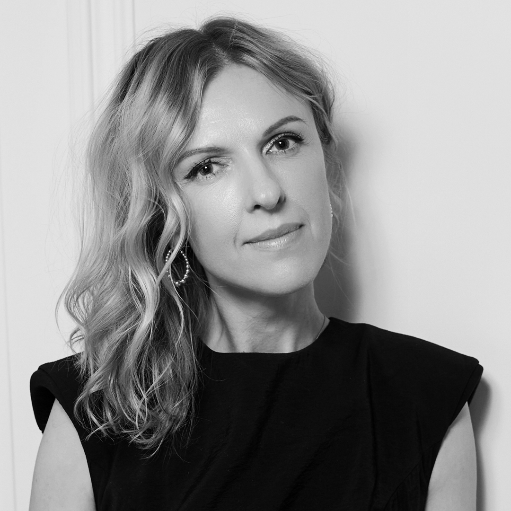
Юлія Костецька
Паблішерка Vogue Ukraine
Медіаекспертка з 18-річним досвідом, випускниця програми «Школа стратегічного архітектора» Києво-Могилянської Бізнес-Школи Юлія Костецька понад два роки є паблішеркою Vogue Ukraine, очоливши його у вкрай важкий для країни та медіаіндустрії період, – за цей час український Vogue став ініціатором багатьох культурних та соціальних проєктів та попри воєнні випробування продовжує виходити друком.
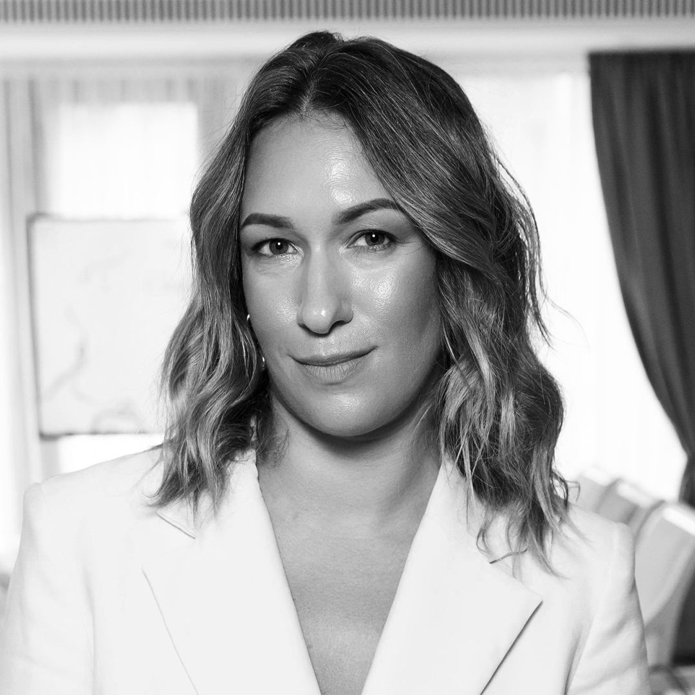
Дарія Слободяник
Редакторка відділу культури Vogue Ukraine
Редакторка та журналістка з 17-річним досвідом роботи в медіа. Роботи Дарії публікувалися в міжнародних виданнях, зокрема Vanity Fair, British Vogue, Vogue Poland тощо. Менторка та викладачка літературної школи Litosvita, а також SheMedia School, ініційованої UN Women та Стокгольмською школою економіки.
TBA
TBA
TBA
ЗАПИТАННЯ ТА ВІДПОВІДІ
Чи можу я придбати квиток у день події?
У вас буде можливість придбати квиток у день проведення заходу за умови наявності квитків.
Чи можна повернути квитки?
Повернення квитків можливе лише у випадку скасування події.
Чи відбудеться подія у разі оголошення повітряної тривоги?
Якщо буде оголошено повітряну тривогу, конференцію буде зупинено, всі учасники заходу евакуюються до укриття в місці проведення події.
Де знаходиться найближче укриття?
На території UNIT.City. Перед початком заходу гостям буде надано інструктаж та показані шляхи евакуації до найближчого укриття.
Чи буде онлайн-трансляція і доступ до відеозапису виступів конференції після її закінчення?
Онлайн-трансляція і відеозаписи виступів не передбачені.
Прибуток від продажу благодійних квитків буде спрямовано до фонду Veteranka, який захищає права жінок у війську й допомагає захисницям адаптуватися в цивільному житті.